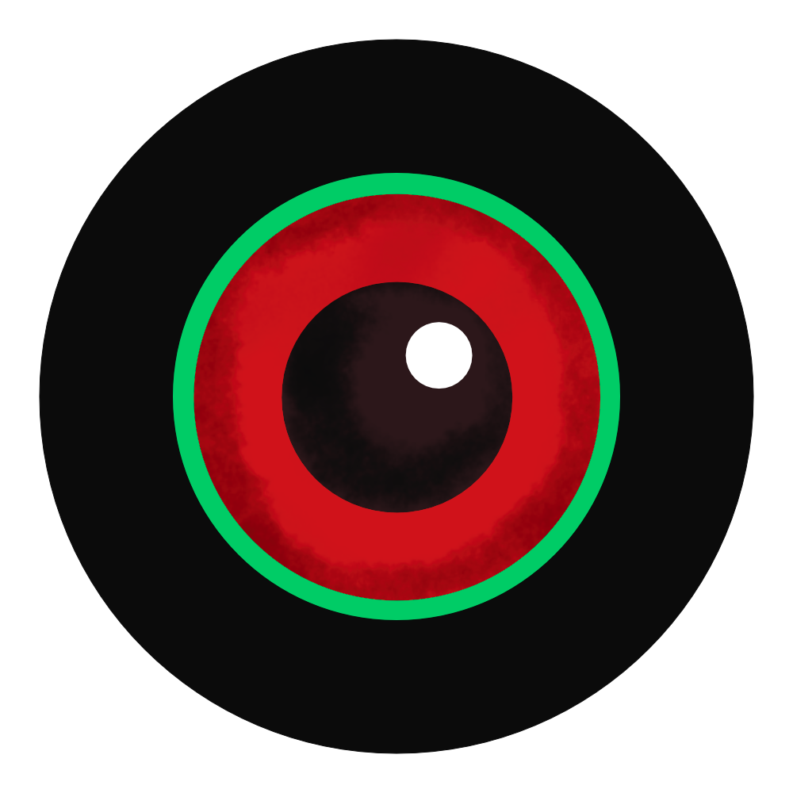
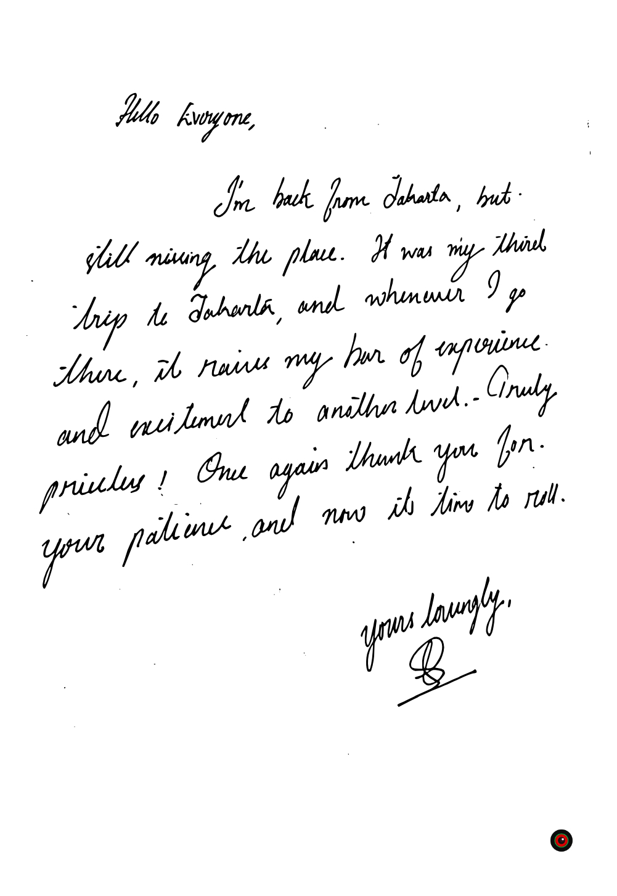
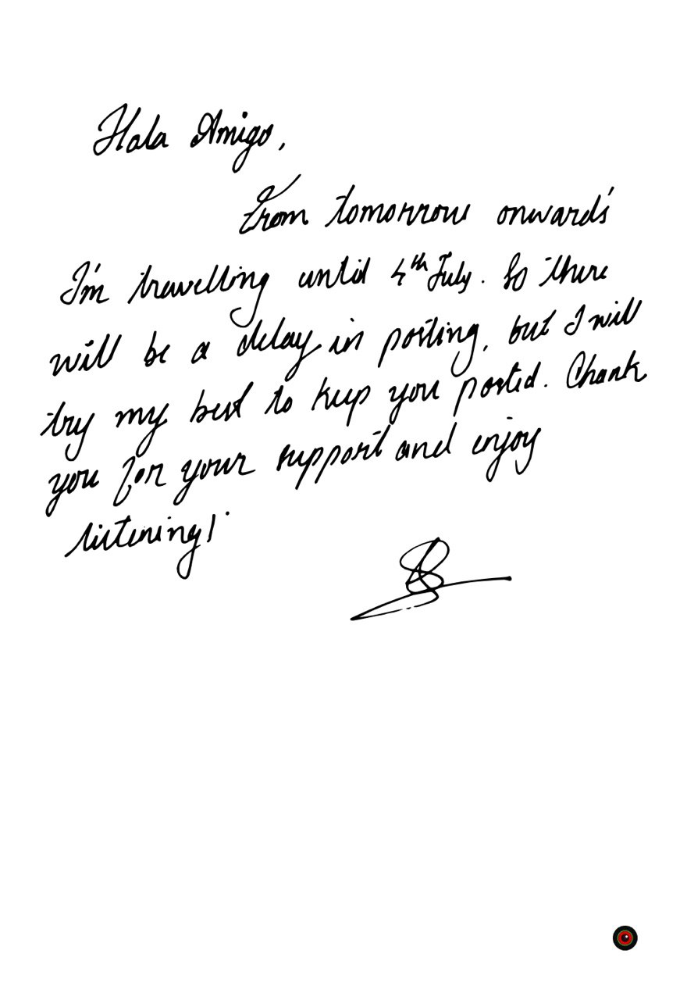

Looking for a new music album?
Rad Fad Mad: all genres, all styles, all ages, all over the world! This is one of my side projects, started in 2016, to suggest music from my collection. Over time, I tried to share over multiple media such as medium, telegram and twitter, but I wasn't satisfied. So finally, I decided to keep it on my website to make it easier to manage and publish on a monthly basis. Enjoy it!

April 2020
Kikagaku Moyo
Started in the summer of 2012 busking on the streets of Tokyo. Though the band started as a free music collective, it quickly evolved into a tight group of multi-instrumentalists. Kikagaku Moyo call their sound psychedelic because it encompasses a broad spectrum of influence. Their music incorporates elements of classical Indian music, Krautrock, Traditional Folk, and 70s Rock. Most importantly their music is about freedom of the mind and body and building a bridge between the supernatural and the present. Improvisation is a key element to their sound. - band website

Kikagaku Moyo
by Kikagaku Moyo
Rock • Psychedelic • Raga Rock • Folk • 2013 • Japan

Forest of Lost Children
by Kikagaku Moyo
Rock • Psychedelic • Raga Rock • Folk • 2014 • Japan
"Mind, Body & Psychedelica!" – Krautrock, psychedelic, heavy psych, folk, sitar, oriental, mellow, warm, peaceful, atmospheric, distort, energetic, ethernal, soothing.

House in the Tall Grass
by Kikagaku Moyo
Rock • Psychedelic • Raga Rock • Folk • 2018 • Japan

Masana Temples
by Kikagaku Moyo
Rock • Psychedelic • Raga Rock • Folk • 2018 • Japan
Shibuya-kei
Shibuya-kei is an eclectic Pop scene from Japan, originating in the late 1980s and popularised through the early 1990s. The name, translating literally as "Shibuya-style", specifically refers to the Shibuya shopping district of Tokyo, an area which at the time was considered the epicentre of fashion with its throwbacks to Western retro and kitsch culture, particularly of the 1960s. Also central to the Shibuya district and its culture were its record stores, stocked with import records from Europe and the United States, whose musical styles would form the basis for a Shibuya-kei movement which reflected the fashion styles popular in the district.

Future Listening!
by Towa Tei
Electronic • Shibuya-kei • Nu Jazz • 1994 • Japan
"Shibuya Shots On The Table!" – Latin, bossa nova, dub, funk, lounge, downtempo, sampling, beats, tropical, exotic, japanese, portuguese.
Ambient
Ambient is a style that describes a large spectrum of music. Ambient music puts more emphasis on actual sound than musical structure, aimed at forming a particular atmosphere or mood with the help of conventional and unconventional instruments, sound clips, and sometimes vocal clips. Singing in ambient music can be done, although a good deal of ambient is instrumental.

Sakura
by Susumu Yokota
Electronic • Ambient • Techno • 1999 • Japan
"Blue Note of Electronica!" – Downtempo, oriental, warm, atmospheric, melancholic, harmonious, peaceful, fluid, soothing, sampling, mellow, dreamy, relaxing.
Ambient music is not limited to any particular mood or sound, but rather embraces the idea that any mood or atmosphere can be achieved through sound alone, rather than needing to rely on music composition or song structure. Ambient has been incorporated into a large amount of various already-existing musical genres, due to its extremely compatible usage and versatility.

Music Has the Right to Children
by Boards of Canada
Electronic • IDM • Ambient • 1998 • UK
"More Than A Psychedelic Journey!" – Trip-hop beats, atmospheric, mellow, hypnotic, mysterious, rhythmic, warm, nature, psychedelic, melancholic, sampling, soothing, repetitive, aquatic, lush, surreal, cold, ominous, deep, dark.
"Ambient Music must be able to accommodate many levels of listening attention without enforcing one in particular; it must be as ignorable as it is interesting." – Brian Eno

Ambient 1: Music for Airports
by Brian Eno
Electronic • Ambient • Minimal • 1978 • UK
"I Don't Know Where I'm!" – atmospheric, soothing, meditative, peaceful, mellow, ethereal, calm, minimalistic, instrumental, repetitive, hypnotic, soft, choral.
Polynesian Music
The music of Polynesia is diverse, yet forms a coherent and easily recognisable style. Polynesian music has evolved from an array of cultural influences, and in varying degrees of isolation across the islands; islands which are musically linked not just by the migration patterns that first populated them, but also those which later introduced the indigenous peoples to European, American and East Asian influences.

Te Vaka
by Te Vaka
World • Pop • Folk • Polynesian • 1997 • New Zealand
"An Introduction To South Pacific Fusion!" – Contemporary, pacific, drum, maori, tribal, indigenous, colonisation.
Traditional song and dance, accompanied by unique combinations of indigenous instruments and polyphonic choral singing, have thereby been integrated with non-native instruments and songs. Among these, stringed instruments, such as the guitar, and the Christian Hymns imposed upon the native peoples are both notable. The influence of Polynesian music can be most clearly heard across the Pacific island groups, and to a lesser extent worldwide.

March 2020

The Sun Ra Arkestra Meets Salah Ragab in Egypt
by The Cairo Jazz Band
Jazz • Avante-Garde • Big Band • 1983 • Egypt
"Meeting By the Nile!" – Free-jazz, space-jazz, post-bop, percussive rhythms, free improvisation, experimental, arabesque, fusion, oriental, hypnotic, spiritual, mysterious, dessert.

Pangea
by Pangea
Electronic • New Age • 1996 • Belgium
"Once upon a time, at the beginning of earth, all was one continent, it's name Pangea!" – Tribal, indigenous, chants, ambient, downtempo, deep, africanism, natural, humanity, expedition.
Album Link:
iTunes,
Spotify,
Youtube

Rafi's Revenge
by Asian Dub Foundation
Electronic • Drum n Bass • Rap • 1998 • UK
"Brothers and sisters of the soul unite, We are one indivisible and strong!" – Jungle, ragga, rap-core, dub, bhangra, pop vocal samples, anger, protest, rebel, revolt, socio-political, racism, energetic, Satpal Ram, British hip-hop, UK album charts.

Advanced Chemistry
by Advanced Chemistry
Hip Hop • Conscious • 1995 • Germany
"Fremd Im Eigenen Land!" – Conscious, rap, sampling, angry, rebellious, protest, racism, immigrants, political realities, urban, energetic, anthemic, rhythmic, German hip hop pioneers.
Album Link:
iTunes,
Spotify,
Youtube

Deep Forest
by Deep Forest
Electronic • New Age • World • 1992 • France
"Ethno-introspective ambient world music!" – Tribal, indigenous, ambient, contemporary, breakbeat, electronic, ethnic vocal, fusion, deep, danceable, natural, field recordings, Baka pygmy, Efé, Congo, Burundi, Solomon Islands, Tibesti, Sahel.

Call Me Up
by Bromar
Electronic • Funk • Disco • 1985 • USA
"A Funkastic Classic!" – Synth-funk, electro, contemporary R&B, pop-soul, beat, jam, groovy, energetic, urban, happy, lush, romance, longing, danceable, classic, rare.

Volume 5
by Dur-Dur Band
Muqdisho Funk • Qaraami • Soul • 2013 • Somalia
"Before The Civil War!" – African, afrofunk, soulful, disco, Somali-jazz, groovy, happy, tropical, world, East African, Somali, Muqdisho, lo-fi, squeaky, cassette, mono, gem.

Semut Hitam
by God Bless
Rock • Hard Rock • Heavy Metal • 1988 • Indonesia
"Lebih Baik Di Sini, Rumah Kita Sendiri!" – Classic, hard, metal, melodic, anthemic, uplifting, rights of the poor, Ahmad Albar, rock pioneers, all time best, Rolling Stone Magazine, Indonesian top charts.

The Budos Band
by The Budos Band
Funk • Afrobeat • Deep Funk • Jazz Funk • 2005 • USA
"70's Psychedelic Instrumental Music, Afro-soul inspired by Ethiopian music with a soul undercurrent, and a little bit of sweet 60's stuff sprinkled on top!" – funk/horn-rock ensemble, percussion, deep, heavy grooves, heavy psych, afro-beat, African rhythms, Latin rhythms, energetic, tropical.

Floral Shoppe
by Macintosh Plus
Electronic, Vaporwave, Abstract, Glitch, Experimental, Ambient • 2011 • USA
"Back in the Days of Blue Screen Error!" – Experimental, sampling, chopped and screwed edits, looping, glitching, pitch-bending, panning, echoing, reverberation, hypnotic, atmospheric, surreal, mellow, psychedelic, sensual, elevator music, corporate, capitalism, internet pop culture.
Album Link:
iTunes,
Spotify,
Youtube

Ekata
by Namaste Band
Reggae • Folk • 1995 • Nepal
"Nepal, Never Ending Peace And Love!" – Reggae, folk, fusion, Nepalese, Himalayan, countryside, unity, love, peace, respect, harmony, joyful, simplicity, Ishor Gurung, Japan-Nepal collaboration.
Album Link:
iTunes,
Spotify,
Youtube

Mkwaju Ensemble
by Mkwaju Ensemble
Ambient • Minimal • Avant-garde • 1991 • Japan
"Awake To Your Dreams!" – Minimal, ambient, experimental, contemporary, tribal, drone, percussion, African, Latin, exotic, tropical, oriental, fantasy, dreamy, mysterious, repetitive, hypnotic, marimba, gongs, vibraphone, synths, Midori Takada, Joe Hisaishi, KI-Motion.
Album Link:
iTunes,
Spotify,
Youtube

On
by Altın Gün
Rock • Anatolian • Psychedelic • Folk • 2018 • Netherlands
"Turkish Psychedelics Is Back!" – Anatolian, funk, deep, folk, fusion, contemporary, alternative, indie, groovy, arabesque, oriental, psychedelic, hypnotic, trippy, electrify, rhythmic, vibe-full, hippie, flower power, Turkish, Grammy nominee.

Ágætis Byrjun
by Sigur Rós
Rock • Post-Rock • Ambient • Dream-Pop • 1999 • Iceland
"Crawling Through The Black Sand!" – Ethereal, abstract, orchestral, atmospheric, androgynous vocals, soothing, melancholic, mellow, winter, calm, lush, mysterious, dense, sentimental, soft, peaceful, uplifting, nocturnal, epic.

In the Heart of the Moon
by Ali Farka Touré & Toumani Diabaté
Mande • Songhai • Dessert Blues • 2005 • Mali
"A Perfect Harmonic Landscape!" – Blues, folk, African, ethnic, acoustic, melodic, calm, soothing, mellow, peaceful, warm, happy, instrumental, uplifting, hypnotic, meditative, spiritual, desert, West African, Jeli caste, Mande culture, Songhai culture.
January 2020

Original Javanese Music: Gending-Gending Instrumental
by Karawitan Condhong Raos
Gamelan • Folk • 2000 • Indonesia
"A Pure Javanese Trance!"— On my second trip to Jakarta, I picked up this CD from a local store without much expectation. But after listening, it turned out to be one of the best picks. The album is in the traditional style of music called Gamelan, originated in the Java Islands, Indonesia. The term Gamelan refers to a set of instruments consisting of metallophones, gongs and drums. It sounds very eclectic, hypnotic, and it makes you feel spiritual.
Album Link:
iTunes,
Spotify,
Youtube

Under Tage
by R.A.G
Hiphop • Conscious • Rap • 1998 • Germany

Pottential
by R.A.G
Hiphop • Conscious • Rap • 2001 • Germany
"Ein Deutsches Hip Hop Meisterwerk!" - Amazing groove production, rhyming rap and good enough turntable-ism; I think 'Under Tage' and 'Pottential' are absolutely masterpieces by Ruhrpott AG a.k.a. R.A.G. R.A.G. is a conscious rap group based in Bochum, depicting stories from the Ruhr region. So far, only two albums have been released, and the band dispersed after the release of the second album. But both albums are inevitable from the German classic hiphop list.
Under Tage Album Link:
iTunes,
Spotify,
Youtube
Pottential Album Link:
iTunes,
Spotify,
Youtube

Duo Kribo - Original Soundtrack
by Duo Kribo
Rock • Psychedelic • 2014 • Indonesia
"Rock, Psychedelic and Heavy Funk!" - Duo Kribo, an Indonesian rock band, formed in the late 1970s by two legendary singers-Ahmad Albar, vocalist of the God Bless band, and Ucok Harahap, vocalist of the AKA band. Together as Duo Kribo, more than 1,000,000 cassettes were sold and popularized in Indonesia, Malaysia and Singapore. They also made a film in 1977 called "Duo Kribo," telling the story of two Indonesian rockers. And this album is the film's original soundtrack.
Album Link:
iTunes,
Spotify,
Youtube

Futuristic Journey
by Biddu Orchestra
Funk • Soul • Disco • 1978 • UK
"Namma Disco!" - There's nothing wonderful about this record, it's a generic disco album blended with futuristic and oriental sounds. But Biddu, a.k.a. Biddu Appaiah, is inevitable. One of the pioneers of Euro-disco and producer of the Carl Douglas song "Kung Fu Fighting." More than that, Biddu is also one of the godfathers of Indian Rock and Roll. In his early twenties, inspired by the Beatles, he formed a band called Trojans with his friends. Later, it became a cult and paved the way for the Indian rock and roll scene.
Album Link:
iTunes,
Spotify,
Youtube

Avancez l'arrière
by Djmawi Africa
Fusion • Celtic • Reggae • Rock • Gnawa • 2013 • Algeria
"Where Celtic Meets Gnawa!"- found this album two months ago, turning out to be one of the best findings and heavy rotation. Ahallil and Manayo Tribe are my favourite tracks, but Derdba is exceptional. Derdba starts with a Celtic tune and later it merges into traditional Algerian soundscape, which is simply beautiful. Djmawi Africa, a young Algerian band trying to put reggae, rock, Celtic and Gnawa tradition into one jar. - Highly Recommended!

Ananda Shankar
by Ananda Shankar
Rock • Raga Rock • Psychedelic • 1970 • US
"A Must Listen Before You Die!" - This album is one of Ananda Shankar's early experiments, trying to combine western and Indian music into a new form of music. This album combines rock, sitar and heavy synths with an Eastern psychedelic experience. Talking about Ananda Shankar, he's an Indian classical musician who's excited with Led Zeppelin, Janis Joplin and electronic music. He is also the nephew of the legendary sitar player Ravi Shankar. In the 1960s, during his visit to America, he played with a number of contemporary artists such as Jimi Hendrix. It also signed an agreement with Reprise Records to make this cult record. - Highly recommended!

World Clique
by Deee-Lite
Electronic • House • Funk • 1990 • US
"Pop, Funk and House in a Blender!" - It's very hard not to move your feet to this album, because it's so rhythmic, playful and energetic. World Clique is a party album by Deee-Lite, a trio consists of Lady Miss Kier, Supa DJ Dimtry and DJ Towa Tei. Upon releasing the album single 'Groove Is in the Heart', it topped the Billboards and became an international hit. But after the success of the song, they weren't able to pull up another one like that.
August 2019

Global Spirit
by Karunesh
Electronic • New-Age • Ambient • Tribal • Downtempo • 2000 • Germany
“Some people call it trash, but it‘s not!” - Last time when I shared the album Time Traveller by Rahul Sharma, I mentioned about the Indian spree of releasing new age and fusion album from the '90s till post-millennium. So today we are going to listen to a record which belongs to that spree. “Global Spirit”, an ethereal new-age album by Karunesh, release in 2003. It‘s a smooth and straightforward mix of pop beats, Enigma samples and tribal chantings; sounds spiritual and meditative. Maybe because of the simplicity, it didn't get much popularity and underestimated. But for me, I love this album because of the cultural diversity, and I appreciate diversity in any manner. About Karunesh, a German-born new-age and ambient musician with a broad taste of culture and music. Before getting the name Karunesh, he was Bruno Reuter, a trained graphic designer. After meeting with an accident, he rethought about life and travelled to India. In India, he meet Osho in 1979 and adopted the new name Karunesh. Since then he‘s into weaving new-age album, and so far he released 22 albums and appeared in many compilations - Recommended!

Utsarga
by Kutumba
Folk • Newa Folk • 2010 • Nepal
“Call of the mountains!” - Even if you pick ten random Nepalese songs, and out of the ten, six will very uplifting and joyful songs. So today, we have a very uplifting folk album from Nepal called “Utsarga” by “Kutumba”. This album is the first Kutumba album that I‘m listening to, and always in my Nepalese suggestion list. Kutumba is a pure traditional folk band of Nepal, a group of seven professionals from Kathmandu, come together for the preservation of their culture and art. And spreading love and joy of Nepali folk music throughout the world. - Highly Recommended!

19
by Paul Hardcastle
Electronic • Electro • Hiphop • 1985 • UK
“I was out having fun in pubs and clubs when I was 19, not being shoved into jungles and shot at!” - This is the second time I‘m sharing a Paul Hardcastle album. Last time it was a compilation album called Rain Forest, and this time, another groundbreaking electro singles called ‘19’. More than a song, 19 portraits the picture of soldiers in the Vietnam war in a dance groove. Sound very creepy, but he did his job on conveying the effects of the Vietnam war in a convincing way. Paul got the inspiration and made this track after watching the documentary Vietnam Requiem and comparing his own life at 19 to those of the soldiers featured. Upon releasing the song, it topped the UK charts for four weeks as well as other countries. - Highly Recommended!

Chatma
by Tamikrest
Blues • Folk • Rock • Desert Blues • Tishoumaren • 2013 • Mali
“A desert hosts us, a language unites us, a culture binds us!” - Today again, we are going back to the blistering dunes of Sahara, with spaced-out guitars, bedouin grooves and Tuareg identity. Like Tinariwen, Tamikrest is a group of musicians who belong to the Tuareg people, blending traditional music, rock and Tamasheq language to make the Tuareg culture accessible across the boundaries. The album “Chatma”, is the third album in their discography, released in 2013. The album honours the role of women in Touareg society as historians, poets, and guardians of ethics, besides parent educators. - Highly Recommended!

Hand On The Torch
by Us3
Hip Hop • Jazz • Jazz Rap • Acid Jazz • 1993 • UK
“A key to the blue note!” - After Jazzmatazz, presenting you another jazz-rap record called “Hand on the Torch” by “Us3”. Us3 is a British jazz-rap group founded in London in 1992, and this is their debut record. What makes this record special is the samples that they used from the Blue Note records and the usage of live jazz along with the groove. Upon release, those samples acted as an advantage to receive applause, but at the same time it gathered a lot of criticism as well. A lot of people strongly disagree with this album because of the rapping; they said it‘s very sloppy and the beats are constant, nothing impressive. But I don‘t think these reviews matters because people have different perspective and taste. So, it‘s always better you taste it yourself and decide whether you like it or not. - Recommended!

Mapusa
by Mashiti
Electronic • House • Deep House • Folk • World • Downtempo • 2014 • Denmark
“From Norway to Sufi, and India!” - “Mapusa”, a deep mix of Indian traditional, folk and electronic, by “Mashti”. Mashti a.k.a Mads Nordheim is a Norwegian composer, producer and DJ, based and working out of Copenhagen in Denmark. His style of music is more combining Persian, Turkish and Indian traditional music with deep-house kicks. For me, each track in this album portraits different picture of India and Indian cultures. Like, the first track reminds me of coastal India, the second one about the Sufism and it goes on. So, if you are in the mood for downtempo, plug your headphones and listen to all six tracks. - Recommended!

The Groove Sessions
by Chinese Man
Electronic • Hip Hop • Trip Hop • Breakbeat • Turntablism • 2007 • France
“Be ready for the breaks!” - Today we have a kickass trip-hop album called ”The Groove Session: Vol 1” by “Chinese Man”, a trip-hop collective from France, formed in 2004, influenced by different styles of music and Asian traditions. This album is a proper intersection of breakbeats and world music, resonates with a jazzy feeling. Starts with very simple grooves, and towards the end, it gets tighter and, especially the last five tracks. This album is a compilation of their first three EP‘s called The Pandi Groove, The Indi Groove and The Bunni Groove. Another interesting fact about the band is the name controversy, and there were protests during their tour. But the group stated it very clear that it came from the name of the first track the collective produced together in 2004. And the track was named from a vocal sample saying Chinese man, and they kept that name for the band and the related label. - Recommended!

Codona 2
by Codona
Jazz • Free Jazz • Latin • Afro • World • Indian • Fusion • 1981 • Germany
“An album beyond time and space, purely an acoustic trance!” - Today‘s album is a follow up to an eairler post that I did a couple of months back called Codona. A free jazz trio consists of Collin Walcott, Don Cherry and Nana Vasconcelos. Last time I shared the first part of the project and this time the second part. Same as the first part, this is also a multi-ethnic improvisation, folkloric ambient, very native, traditional and tribal; a proper acoustic trance! A fabulous association of Indian, Brazillian and Afro soundscape, improvise as a free bird, legendary music, legendary musicians. - Highly Recommended!

Walk like a Nubian
by Ali Hassan Kuban
Folk • World • Nubian • 1991 • Egypt
"Walk like a Nubian" is a classic folk album by Ali Hassan Kuban depicting the harmony of Nubian culture. From the start to the end, this album is so rhythmic and positive. Talking about Ali Hassan Kuban, there is a saying - "No Nubian wedding used to be complete without Ali Hassan Kuban". And you will understand the gist once you listen to this album. Ali Hassan started his career as a clarinet player in an orchestra. Later because of lung problem, he stopped playing and started focusing on the Western style of music like jazz and swing. Eventually, he blended the traditional music of Nubia with jazz and made every Nubians celebration memorable. More than a musician, Ali Hassan Kuban is a cultural icon and the one who introduced Nubian music to other parts of the world.

Weekend Special
by Brenda and the Big Dudes
Pop • RnB • Disco • Boogie • Bubblegum • 1986 • South Africa
Brenda and the Big Dudes is a popular band from South African, and "The Weekend Special" is their debut album released in 1983. Upon releasing the title track, it became one of the best selling records in South Africa and brought the band into the limelight. The album is in pop/RnB style, which even peaked the Hot R&B/Hip-Hop charts at 72 and stayed for eight weeks.

Éthiopiques 9
by Alèmayèhu Eshèté
Jazz • Ethio Jazz • 1969 • Ethiopia
Éthiopiques 9 is a compilation of songs by Alemayehu Eshete from 1969 to 1974. Alemayehu Eshete aka The Ethiopian James Brown is a popular Ethio-jazz singer and the father figure of belle époque era of Ethiopian music. He started his career as a singer in a police band during the '50s, and later by '60s, started melding Amharic lyrics with western styles like jazz, swing and bossa nova. Over the time he released 30 astonishing singles, full of swing and energy, good enough soul and funky grooves. But by the arrival of military dictatorship, put a stop into the Ethiopian music scene and forced artist like Alemayehu into exile. I think more than an album, its an actual evidence of Ethiopia's golden era of music and the vibrant nightlife.

Le Défi
by Bembeya Jazz National
Jazz • Mande Music • 1969 • Guinea
"Le Défi", a perfect afternoon diet by "Bembeya Jazz National", one of the most significant bands from Guinea. Their music is more like, Mande culture wrapped in Afropop rhythms, along with kora guitar styles, Latin horns and Afro-Cuban persuasions. Talking about the ensemble, initially, they were a regional band called "Orchestre de Beyla", formed in the remote town of Beyla in 1961. Upon winning competitions, they started gaining popularity and relocate to Conakry. In Conakry, they earned the title as national orchestra and changed their name to "Bembeya Jazz Nationals".

Danger
by Lijadu Sisters
Afrobeat • Afro Funk • 1976 • Nigeria
Lijadu Sisters. The female face of afrobeat. Being in a male-dominated music style, with their voice, they made their distinction and continuing as one of the best since the '70s. Lijadu Sisters style of music is a blend of different styles like reggae, R&B, psychedelic, funk and soul with afrobeat, to create honest and politically-charged songs. This album, Danger, the second album by Lijadu Sisters released in 1976, full of funky drumming, guitar improvisations and awareness. Don't miss it.
July 2019


Java - The Atmosphere
by Andre Mayorga
Folk • Lounge • Ambient • Indonesia
"One of the best Lounge!" - Just came back from Jakarta, but I'm really missing! Amazing people, unbeatable hospitality, harmony in symphony, food food food, elegant art, eclectic music taste, highly maintained infrastructure - If I start to list down, I won't finish. So, let's end my Jakarta trip in a good note - No rock, no pop, just folk!
Java the Atmosphere, I picked up this CD from a local shop at Jakarta blindly without much expectation. But when I listened to it, it turned out to be one of the best lounge that I ever heard. Hardly I have three or four lounge albums in my collection, and this is the number one in it. Talking about the album, why I love it? Because of the array of traditional instruments used, the ambient fill, the innocence of the countryside and my Indonesian memories. Terimakasih!
Album Link:
iTunes,
Spotify,
Youtube

Chicano Blues
by Funky Aztecs
Hip Hop • Latin • Gangsta • Chicano Rap • 1992 • USA
“Viva La Raza!” - Through this album, Funky Aztecs try to break the line and bring peace between the Mexican-American gangs Norteños and Sureños. Another interesting fact about this album is its album cover, it represents the Norteños in red and Sureños in blue (the gang colour itself) with the same dress and the same number of people, to show both are same in everything. In a nutshell English, Spanglish and good enough rap-ing. And more than an album, Chicano Blues is a page from the history of Mexican-American Chicano Movement.

Kandisa
by Indian Ocean
Folk • Rock • Fusion • 2000 • India
“Kandisa Alahaye Kandisa Esana!” - Kandisa, the one song which I found on a compilation disc during my college days. Initial I didn't play this track, but the moment I played it, I fell in love with it. It sounded very divine, and the feel is inexpressible. Another interesting fact about the song is the lyrics; it's in Aramaic-East Syriac, used in the liturgy of the Saint Thomas Christians of Kerala. Not just the song Kandisa, all other songs are also a perfect blend of different folk styles. Even if you didn't listen to the complete album, don't miss the last track - Kandisa.
The album Kandisa, is the second studio album by the Indian Ocean, one of the most beloved Indian fusion rock band - Recommended!

Soul Makossa
by Lafayette Afro Rock Band
Funk • Jazz Funk • Makossa • Afrobeat • 1973 • France
“Groovy as hell!” - Soul Makossa by Lafayette Afro Rock Band, a killer grooving record, and one of my favourite afro funk record. This record is a perfect style crossover - funk rhythms, African percussion and afrobeat. Talk about the band, Lafayette Afro Rock Band, formed in America but relocated to Paris even before becoming the cult. And why they became cult? It's because of two tracks in this album, one is Soul Makossa, and the other one is Hihache. Soul Makossa, the funkiest version of Cameroonian saxophonist Manu Dibango's single "Soul Makossa". And Hihache, one of the fuels of hiphop, sampled many times and famous for the break beats. And not just these track, all the tracks in this record are crazy. Heavy bass, tight drums, soaring horns, fuzzy guitar and funk - Highly Recommended!

Five Phases Of The Noom
by Various
Electronic • Techno • Acid • Hard Trance • 1998 • Germany
“Hello Friday, let's rave!” - Till the date almost all my suggestions where rock, jazz and funk. So for a change, let's have a Hard Trance compilation from Noom Records called the "Five phases of the Noom". If you are a witness of the 90's rave parties, then Noom Records won't be stranger for you. And for those who don't know, it's the one the most respected label among the ravers. Most of the tracks in this compilation are acid bass, trance and 140+ bpm. In brief, it's nothing but a powerhouse of acid and bangers. Most of the people I know show a hard time accepting this kind of music, but this is real gold - Highly Recommended!

Live at Jazz Vienne
by Remembering Shakti
Jazz • Indian Classical • Fusion
“This is how you should remember Shakti!” - Today instead of an album, we are having live performance by Remembering Shakti. It's a five-piece band consisting of John McLaughlin (guitar), Zakir Hussain (tabla), U. Srinivas (mandolin), Shankar Mahadevan (vocals), and V. Selvaganesh (kanjira, ghatam, mridangam). This band is a reformation of the old Shakti band, consist of John, Zakir, L. Shankar and T.H. "Vikku" Vinayakram. I think this is the second time I'm mentioning the name Shakti in this channel. And yes, this album is not from the real band, but the essence, it's still there. Writing a review of this performance will be an injustice, so I'm leaving this up to you. But one thing, it's elegant. - Highly Recommended!
Album Link:
iTunes,
Spotify,
Youtube

A Handful Of Beauty
by Shakti
Jazz • Indian Classical • Fusion • Contemporary Jazz • 1977 • USA
“The real Shakti is here!” - Yesterday we were talking about Shakti for the second time, but we never play it. So, why don't we listen to it today? "A Handful of Beauty" is the second studio album by Shakti and a perfect east meets west album, very unconventional and experimental. Highly Recommended!

Hong Kong Dub-Station
by Celestial
Electronic • Dub • Downtempo • World • Fusion • 2003 • Hong Kong
“A Kind of Aural Shangri-La!” - Hong Kong Dub Station, another chill-out, east meets west album, more specifically saying, it's an Asia meets west album. This album contains a fusion of different styles of music like classical, dub and folk, as well as cultures like Chinese, Japanese, Indian, Nepalese and I think Welsh too. This album is the third album by Celestial, a HongKong based music collective of more than 15 musicians. If you ask me which is your favourite celestial album, I would say this because of the first track; it was so welcoming, and the Shakuhachi, oh man, it melts me away. Not just the opening track, all most all the tracks are excellent, especially Gaawati. - Highly Recommended!

Batida
by Batida
Electronic • African • Kudro • Dance • 2012 • Portugal
“Beat of the drums, Beat of the heart, Beat of the Earth!” - Most of the electronic Afro-dance records that I heard were a downtempo or deep house or chill-out. But very rarely, I meet some high enegry records and Batida is one of them. "Batida" is a compilation by "Batida" a.k.a Pedro Coquenão, an Angolan-born, Portuguese-raised music fanatic. For me, what makes this record so unique is the samples that he used. In all the tracks, Batida embedded the music of Angolan from the '60s and '70s, along with electronic dance music, and made the entire experience into a street party. But more than a party, most of the tracks depicts Pedro viewpoints about the socio-political aspects. Angolan music history, street party and bass, I think you should not miss this record. - Highly Recommended!

Facts And Fictions
by Asian Dub Foundation
Electronic • Hiphop • Dub • Drum 'n' Bass • Jungle • Bhangra • Ragga • Conscious • 1995 • UK
“For the rebels, by the rebels!” - Facts and Fiction, an album for the leftist and anti-fascist, against racist and injustice, by the Asian underground. From the beginning to the end, it's a rebellious journey interweaving different styles into one solid album - a pure mix of dub and Asian ethnicity. Talking about the Asian Dub Foundation, started as a collective music project in 1993 and still touring. One thing I like about the band is the countries that they choose to tour, like Morocco, India and Cuba, where usual rock bands don't tour. My first experience with Asian Dub Foundation is through the video game Need for Speed Underground, and the song was "Fortress Europe". Since then, the Asian Dub Foundation is in my collection. - Highly Recommended!

Jet Sounds
by Nicola Conte
Jazz • Electronic • Latin • Acid Jazz • Bossa Nova • Samba Jazz • Nu Jazz • 2000 • Italy
“It's time for a cigar and whiskey!” - From the last couple of days, we were listening to pumped up albums by Asian Dub Foundation and Batida. So, to neutralise the energy, let's have a lush tropical album called Jet Sounds by Nicola Conte. This album is an uplifting one, with the essence of '60s bossa nova and Italian movies. I found this album through our old grooveshark, and since then it's in my shelf. Talking about Nicola Conte, he's a famous Italian jazz innovator, composer, producer and DJ. His style of music more world fusion, and explores a lot on acid jazz, Latin soundscape and Indian classical. Because of that, all his albums are very warm and rhythmic. - Recommended!

Narkopop
by Gas
Electronic • Techno • Modern Classical • Ambient • Drone • 2017 • Germany
“It's mysterious and horrifying!” - This is the third time I'm posting a GAS album in this channel. Because it's always one of my got to ambient techno. Last time I posted Pop and Königsforst, which are on the bright side, but Narkopop is not. Narkopop is melancholic, lost and chilling. For me, this album sounds very mysterious, sometimes I feeling like a lost soul wandering through a dark woody forest, haunted by thoughts, and in search for something unsure. Layers of synths, samples, white noise and thumping kick drums, again another masterpiece by GAS after seventeen years. - Highly Recommended!

Polar Sequences
by The Higher Intelligence Agency,Biosphere
Electronic • Ambient • Ambient Techno • Dark Ambient • Field Recordings • 1996 • UK/Norway

Birmingham Frequencies
by The Higher Intelligence Agency,Biosphere
Electronic • Ambient • Ambient Techno • Field Recordings • 2000 • UK/Norway
“Dude, ambient techno again!” - Yes, today also an ambient techno album, but not GAS. This time a collaboration project by Biosphere and Higher Intelligence Agency, in two records called Polar Sequences and Birmingham Frequencies. The first record is more atmospheric, dark and artic, and the second one is more urban, dub and fast-moving. Because, Polar Sequences recording was done in Norway, on the top of a hill. And the second one on a Rotunda, in the heart of Birmingham. Now, why Norway and Birmingham? Biosphere a.k.a Geir Jenssen, a Norway electronic musician, pioneering in producing environmental ambient albums. And HIA (Higher Intelligence Agency), a Birmingham based project by Bobby Bird. - Highly Recommended!

Break-Out
by Rodney Stepp
Electronic • Hip Hop • Electro • 1984 • USA
“There's a party in the block!” - Too much tripping on ambient techno, let's spin the mood dial to a classic electro single called "Break out" by "Rodney Stepp". This song is all about the kicks, vocoders and dance; It's electro, futuristic and pumping. About Rodney Stepp, an American keyboardist, songwriter and producer, Stater his career and evolved over different styles like jazz, soul and R&B. Over the time he performed with legends like Micheal Jacksons and many notable artists.- Recommended!
Hiroshima
by Hiroshima
Jazz • Jazz Fusion • Smooth Jazz • Soul Jazz • Japanese Folk • 1979 • USA
“America, Japan and Hiroshima!” - Another fantastic jazz fusion album, its funk and soul, koto and shakuhachi, electric and bass. "Hiroshima", the album start's with a funky groove, continues to flow in a very soulful manner, without losing the Nipponese essence. This album is the debut album of American born band called "Hiroshima", released in 1979 and sold more than 100,000 copies with in the first three months. If you don't want to listen to the entire album, but I recommend you to check out the tracks Lion Dance, Kokoro (I'm in love with the bass and koto) and Taiko Song. - Highly Recommended!

Jazzmatazz Volume: 1
by Guru
Hiphop • Jazz • Jazz Rap • East Coast • Conscious • 1993 • USA
“When Jazz met HipHop!” - For the first time, someone experimented live jazz with hip-hop, and the result was Jazzmatazz. It's the first-ever album to meld live jazz with hip-hop groove and rapping, and others mostly use samples. This album is first solo debut by Guru, an American producer, rapper and actor, released in 1993. Upon releasing, Jazzmatazz peaked the R&B/Hip-hop Billboard at 24th, and commercial success in Europe. This album features lots of famous jazz musicians like Donald Byrd, Lonnie Liston Smith, Branford Marsalis, Ronny Jordan and Roy Ayers. Also features soul singers like Carleen Anderson, N'Dea Davenport, Dee C Lee and French rapper MC Solaar. I think this collaboration list is enough to judge the musical experience, and definitely, it's priceless. It's smooth, laid-back and chilled as fuck, and the best way to end your day. - Highly Recommended!

Electropical
by Juan Laya & Jorge Montiel
Electronic • Afro • Latin • Disco • Soul • House • 2018 • Venezuela/UK
“It's Afro, it's Latin, and it's House!“ - "Electropical", from the name itself it's very evident about that nature of the album, it's electronic and tropical. In other words, Afro-Latin vibes infused into electronic music. The album starts in a soul disco style, later progress into Afro-Latin, and keeps on grooving. This album is two Venezuelan born producers, Juan Laya & Jorge Montiel, released in 2018. My favourite tracks are Cumbanchero (notable for the accordion), Semana Santa En Achaguas (groovy percussion and the trumpet), Vuelo Del Condor (flute) and Sabana (flute again). - Recommended!

Tathastu
by Kendraka
Jazz • Fusion • Indian Classical • Experimental • 2018 • India
“The new generation of Indian Jazz!” - In India, during the '60s, cities like Bombay, Calcutta, Madras and Bangalore were thriving on jazz and swing scene. But gradually it started getting declined when the Anglo-Indian's started emigrating. By the '70s, artists and bands like Ravi Shankar and Shakti, they took it from where their ancestors left and continued experimenting and fusing Indian classical into the art of jazz. Which eventually became the signboards for the hippies. But by the time, Bollywood music took over the common man's taste, and jazz became a minority. I think it's still a minority, but the quality, it never got deteriorated. So today, I'm presenting "Kendraka", the new face of Indian jazz through their debut album called "Tathastu". Kendraka is a jazz fusion band from Calcutta, formed in 2008 and still active. If you are looking for some bass-led jazz album, then I think you are in the right place. It's groovy, trancelike and raga. - Highly Recommended!
Album Link:
iTunes,
Spotify,
Youtube

Play Deep Funk
by The Sound Stylistics
Funk • Jazz • Deep Funk • Funk Jazz • 2007 • USA • UK
“It's Friday, and the Funk is here!” - "Play Deep Funk", for me it's one of the best 21st-century deep funk album that won't make you sit. After listening to this album, the first thing that I checked was the year, because it sounded very old-school, full of breaks and high energy. "Play Deep Funk" is the debut album by "The Sound Stylistics" recorded in 2002 and faced some releasing issue, which got re-released in 2007. The album starts with a throwback to James Brown and keeps you in the groove; A must for funk lovers, mainly instrumental; Fresh and Old-school - Highly Recommended!

Colonial Cousins
by Colonial Cousins
Pop • 1996 • India
“Sa ni dha pa ma ga ma ga re sa!” - Colonial Cousins, one of my all-time favourite album, which is in heavy rotation since my childhood. For me, for some reason, this album has a mysterious connection with rain. Because I also think of playing this album on every cosy raining day and end up playing it, which happened today too. This album is in Carnatic and Hindustani style of singing, backed with the western pop style of music. Upon releasing this album, it became a national sensation and hit the platinum in sales. “Colonial Cousins” is the debut album by an Indian duo called “Colonial Cousins”, formed by singer Hariharan and singer-composer Leslie Lewis. For this album, the duo won several awards like MTV Asia Viewer's Choice Award and US Billboard Viewer's Choice Award. Also, they became the first Indian act to be featured on MTV Unplugged. - Highly Recommended!

Gentleman
by Fela Kuti,Africa 70
Afrobeat • Jazz • Jazz Funk • 1973 • Nigeria
“I be Africa man original!” - No words, this album is one of the best work of Fela Kuti. The title track “Gentlemen”, it starts with a very long intro - two minutes of a saxophone solo, after that, the first beat and the groove begins. On the eight-minute vocal appears, and fantastic call and response - simply a delightful Fela song. Not just the title track, both the other tracks are also amazing, especially the last track “Igbe”, love the groove. Fela Kuti a.k.a The Black President is an afrobeat pioneer, Nigerian multi-instrumentalist, musician, composer, and human rights activist. “Gentlemen” is his ninth studio album, released in 1973. Fela and his songs are very popular for criticising the socio-political condition of Africa. Even in the track “Gentlemen” and the album cover, Fela is commenting on the post-colonial mentality of Africans who adhere to European style. - Highly Recommended!

Guantanamera / Bravo
by Celia Cruz
Latin • Gaujira • 1966 • Cuba
“Es hora de un cigarro!” - Yesterday we had an energetic, angry and rebellious afrobeat record by Fela Kuti, so today, let's steer to la bella, el Habana. “Guantanamera / Bravo”, a fantastic Latin record by “Celia Cruz”, released in 1966. With this record, I have three things to share, first is about the music style, the next is about the song, and then about the artist. So first, the music style - “Guajira” a.k.a Cuban Country, a narrative style of music developed in Cuba in the 18th century, derived from the rustic folk tradition, and still prevalent in rural and urban areas. About the song “Guantanamera”, it’s one of the most notated Cuban patriotic songs. Many other solo artists have recorded this song, and one of them is Celia Cruz. “Celia Cruz”, Cuban singer and one of the most popular Latin artist, more than that, she’s called the Queen of Salsa. Through her career, she made over 76 records; won three Grammys and four Latin Grammys, and collaborated with a diverse range of musicians. - Highly Recommended!

MCMXC a.D.
by Enigma
Electronic • New-Age • Ambient • Folk • Gregorian • 1990 • Germany
“If you believe in the light, it‘s because of obscurity, if you believe in happiness, it‘s because of unhappiness, and if you believe in God then you‘ll have to believe in the devil!” - When I was a child, after listening to Enigma for the first time, I got scared of the music. After that, it took some years for me to start listening to the album. Now when I look back, it‘s amusing, because I got scared of one of the best music of the 20th century. In a way, as a kid, the music did what it supposed to do. “MCMXC a.D.”, the debut album by “Engima”, a project by a Romanian-German composer called Michael Cretu, through which he brought the new-age into the mainstream. Cretu started his career in 1976 and mostly spent time with pop and soft rock. By 1990, the idea of a new-age project called Engima came up, and it became a turning point. “Engima” project is all about of Gregorian chantings, folk instruments and drum machines. Inducing a spiritual, medieval, dark, sexual and sinful atmosphere. - Highly Recommended!
June 2019

Quiet!
by Sheila Chandra
Electronic • Ambient • Drone • Indian Classical • Fusion • 1984 • UK
“Music for the quiet!” - Quiet is an experimental album, where Sheila overlays her mesmerizing voice with minimal texture to create a spiritual ambience. Quiet is perfect laid-back album and the second solo album by Sheila Chandra. Talking about Sheila Chandra, she is a British pop singer, the main contributor of Indipop, and the first Asian to break into the UK charts. She started her career as pop singer and later she moved to drone style and fusion. By 2009, Sheila started seeing the symptoms of burning mouth syndrome and slowly retired from singing, and started focusing on writing.

Love Thang
by Fredi Grace And Rhinstone
Electro • Funk • 1982 • USA
“Truly an amazing female/vocoder duet!” - It's hard to find good electro duet like this, it's pretty rare. And that's why I love this song. Also, when you drop the needle at 00:16, the bass guitar signature, it's same the Uptown funk by Bruno Mars. But, I'm not sure whether he sampled it or not.
Album Link:
iTunes,
Spotify,
Youtube

Dub Side Of The Moon
by Easy Star All-Stars
Electronic • Reggae • Dub • Psychedelic • 2003 • USA
“A chill-out Pink Floyd version!” - A right dub mix without losing the essence. Proper usage of echoes, reverbs and vocals, enough Jamaican and psychedelic. Don't hesitate to listen if you love reggae, you will definitely appreciate this album.

Future Shock
by Herbie Hancock
Jazz • Future Jazz • Funk • Electro • 1983 • USA
“The album which turned the turntable into a musical instrument!” - I was in a dilemma whether should I share this album today because of the last week's electro albums. But finally, I took the decision to share because it's one of the most influential records. Future Shock, an amalgam of jazz, funk, electro/hip-hop and Turntable. If you think from the 80's perspective, this records is really futuristic. This is the 29th album of Herbie Hancock, who started the journey as a sideman in the early 60s, and now, he's a prolific jazz musician a.k.a the modern jazz musician. Over time, he released 41 Studio albums, 12 Live albums, 62 Compilation albums, 38 Singles and 5 Soundtrack albums. And one thing I really like about Hancock is his experimentations on fusing different genres and style. Even if you don't have time to listen to the entire album, just listen to the first track "Rockit" - it's a worldwide breakdancing anthem, won several MTV Music Video awards in 1984, as well as the Grammy award for best R&B performance.

Amassakoul
by Tinariwen
Blues • Folk • Rock • Desert Blues • Tishoumaren • World • 2003 • Mali
From the last two weeks, we are listening to a lot of electronic and jazz albums. So for a change, let's get out of our urban setups, into the scorching desert of West Africa. I hope you will remember the album Temet by Imarhan, a desert blues band from Algeria, and Tinariwen is their godfather. I always love how the Tinariwen intertwined Tuareg culture with electric guitars. The music, it's so traditional, but the electric guitar, it depicts the progressiveness. "Amassakoul" means "The Traveller", the third album by Tinariwen, a desert blues band from Mali making music since 1993. More than musicians, they are the freedom fighters of the Tuareg community, and their songs, it makes you feel that you are one of them.

Clin D'Oeil
by Jazz Liberatorz
Hip Hop • Jazz • Rap • 2007 • France
“A tribute to jazz!” - When we think about the Hip hop, most of the best artist that we know are from America. But I found a French beatmaking trio called the "Jazz Liberators", who sounds like Manhattan. "Clin D'Oeil" is their long-awaited debut release and a remarkable piece. If you love hip hop as well as jazz, you will appreciate this album. It contains classic beats, first-class sampling, instruments after instruments and a great lineup of rappers. Also being a French trio, it's so fascinating to see how they retained the essence of the classic hip-hop production quality, which is very evident as the album progress. The Jazz Liberatorz - DJ Damage, Dusty, & Madhi, they've been around since 1999 and released 11 singles and three full-length albums till 2009, after that, never heard about them. But with the ten years, they became one of the cult group. - Highly Recommended!

Electric Ganesha Land
by Prasanna
Jazz • Rock • Carnatic • Hard Rock • Fusion • 2006 • USA
“A tribute to Jimi Hendrix without any Hendrix melodies” - This is the second time I'm sharing a Prasanna album. Same as his last album, today also we have an another unique mix of Carnatic, rock and jazz. I love the array of South Indian percussions he used to back the electrifying riffs. I found this album four years back, and still, I don't mind listening to it again - Highly Recommended!

The Bongolian
by The Bongolian
Funk • Jazz • Afro-Cuban • Latin • 2002 • UK
“A funk a day keeps the apple away!” - Today on the menu, we have an excellent heavyweight breaking record called "The Bongolian" by "The Bongolian". It's a record, rich in Afro-Cuban percussions, Latin vibes, funky synths and breakbeats. By combine all, this is a perfect dance record and essential for DJs. The Bongolian a.k.a Nasser Bouzida is a multi-instrumentalist and a percussion addict based out of UK, and this is his debut solo album - Recommended for Funk/Latin fans!

A Meeting By The River
by Ry Cooder,Vishwa Mohan Bhatt
Blues • Folk • Indian • World • 1993 • USA
“When the Mississippi meets the Ganges!” - We were listening to a lot of high energy records for the last couple of days; I think it's time to bring the level down. So, today on the plate, we have a soothing and elegant blend of Indian music with blues by Vishwa Mohan Bhatt and Ry Cooder called "A Meeting by the River". More than an album, it's a world-music Grammy winner, and more than that, it's a joyful conversation between two cultures. Talking about Ry Cooder, he's an American born multi-instrumentalist, famous for his slide guitar style and loves to jam with different cultures. On the other hand, Vishwa Mohan Bhatt is Hindustani classical music who plays Mohan Veena, a custom Hawaiian slide guitar made by him.

Visions Of The Emerald Beyond
by Mahavishnu Orchestra
Jazz • Rock • Fusion • 1975 • USA
“From the Avatars of Jazz Fusion!” - Visions Of The Emerald Beyond, the 4th album by the Mahavishnu Orchestra and a perfect jazz-rock fusion. As the album progress, the band's interest on Indian classical become more evident, as well as intricate sound patterns and experimentations. For some, it takes some time to get dissolved into this album, but once you get the hang, there is no return.

Through The Looking Glass
by Midori Takada
Ambient • Experimental • Classical • Minimal • Contemporary • 1983 • Japan
“The notion of time and body, of physicality!” - Through The Looking Glass, the solo debut album by Midori Takada, it's dreamy, mysterious and a cult. Midori Takada, a Japanese composer, percussionist and an ambient savvy who started the career in 1978 as a classical player. But later she started focusing on Asian and African soundscape and formed an ensemble called Mkwaju Ensemble. Because of the financial constraint, after releasing two albums, she dispersed the trio and started going solo. One interesting fact about the album is, the entire album was recorded onto analogue tape in just two days using a diverse array of instruments, including marimbas, gongs, chimes, recorders, a reed organ and Coca-Cola bottles which were blown into and played like flutes. So in brief, this record is deep dive into percussions and a real lucid dream. - Highly Recommended!
Album Link:
iTunes,
Spotify,
Youtube

Shades Of Blue (Madlib Invades Blue Note)
by Madlib
Electronic • Hip Hop • Jazz • Instrumental • Downtempo • 2008 • USA
“A Tribute to Blue Note Records!” - So far, I had shared two jazzy hip-hop records, and today, we have another kickass record called the Shades of Blue by the Madlib. This is a perfect throwback to the golden era of Blue Note records, containing samples from Herbie Hancock, Donald Byrd, Bobbi Humphrey and many more. Talking about Madlib, born in California, a prolific music producer, multi-instrumentalist, rapper and an owner of four tons of vinyl records.
"I've got about three or four rooms of records and two rooms of instruments. I've probably got more than four tons of records by now ... Basically my whole life is music, that's all I do 24–7. I'll take two months off just to listen to records." – Madlib

What's Your Name?
by Zinno
Electronic • Electro • Synth-pop • 1985 • Belgium
“You seem to be unbeatable, Mr Bond!” - Today, I found an impressive record by a band called Zinno from Belgium. And the exciting part about the song is, it's about Bond, James Bond, made out of samples from bond movies and the mighty 808.
“Although never cited, the artist behind Zinno was actually Dan Lacksman from Telex. The female backing vocals singing "who are you, what's your name" were performed by Beverly Jo Scott and Maurane.”

Jingga
by Jingga
Pop • 1995 • Indonesia
“One album, massive hit!” - I found this album during my first trip to Jakarta while digging on a local record shop. Initially, I didn't give much importance to the cassette because it was a pop. But when the shop owner played it, I got surprised! And all of a sudden it took me to the great 80's pop and a lot of childhood memories started gushing. This album is in Bahasa, and I don't know Bahasa, but the music and the vocal, it takes me to the cliff of love and pushes me down; that's how I feel when I listen to this album, so romantic! This album is one of my favourite Indonesian pop, and my favourite tracks are Aku Dalam Manusia, Tentang Aku and Terakhir.
Album Link:
iTunes,
Spotify,
Youtube

Königsforst
by Gas
Electronic • Ambient • Techno • Minimal • Modern Classical • 1998 • Germany
.............................................................................................................................................................................................................................................................................................................................................................-._.......................................................................................................................................................................................................................................................................................................................................................................................

A Little Closer To The Stars
by Astronaut Ape
Electronic • Psy Chill • Ambient • Downtempo • 2012 • Russia
“Can psytrance be slow?” - Psytrance is one of the genres that I never looked into much; I always stuck with the traditional goa trance and friends suggestions. But recently I bumped into a psytrance guide which diversified my thoughts about it. So today I'm sharing a psytrance album, more precisely a Psychill album. Psychill is a downtempo genre, utilises various elements of Goa Trance, 303, and lush atmosphere - Astronaut Ape a.k.a Oleg Belousov, an electronic music producer from Russia and A Little Closer To The Stars is his debut release.

Buena Vista Social Club
by Buena Vista Social Club
Latin • Afro-Cuban • Son Cubano • Bolero • Guajira • Danzón • Descarga • 1997 • Cuba
“A masterpiece in four days!” - One of the essential records which depict Cuba's rich musical culture before the revolution. When you listen to this album, you will won't believe that it was a recording from the '90s, but yes! In 1996, Ry Cooder took the initiative to document the lush tropical sounds of Cuba, by forming an ensemble of musicians from the 1940s, '50s and '60s called Buena Vista Social Club.
But initially, The Buenavista Social Club was a members-only club located in Buenavista, founded in 1932. At that time, clubs in Cuba were segregated into white societies, black societies, etc., and The Buenavista Social Club operated as a black society. But after the revolution, in the 1960s, Cuban music started getting blend with more western style like rock and jazz. And slowly, the style of The Buenavista Social Club got a decline. So, more than an album, it's a history of Cuba, the long-forgotten history!
Another interesting fact is, all the songs on this album were recorded live with no overdubs or studio flattery to maintain the spontaneity and flare of the sessions, and all of this happened in just four days.

Time Traveler - The New Age Santoor Journey Beyond Time
by Rahul Sharma
Jazz • New Age • Rock • Folk • Fusion • 2006 • India
“Like the father, but not like the father!” - One of the most underrated album, but one of my favourite Indian fusion, in rotation since 2006. After the millennium, India started to release quite a lot of fusion, new age and lounge, a lot of western collaborations, among them Rahul Sharma's contribution is enormous. Rahul Sharma, music producer, Indian classical santoor player, and the son of the fabulous Shivakumar Sharma. So far he released more than 60 albums and collaborated with a lot of music like Deep Forest, Kenny G, Richard Clayderman and many more.

Magic Fingers
by Balawan
Jazz • Balinese • Rock • Folk • Fusion • 2005 • Indonesia
"Selamat Datang Di Indonesia!" - I'm on my way to catch the flight to Jakarta, and this is the third time I'm going. Every time I go there, one of my main agenda is to look around for music and returns with a bag full of life. So today I'm sharing a finding from my first trip and the first Indonesian jazz album that I came to know, called "Magic Fingers". This album is a perfect blend of traditional Balinese music with western style, composed by Balawan (I Wayan Balawan). Balawan, an ethnic fusion guitarist from Bali who developed Touch-Tapping Style technique and often regarded as one of the fastest guitarists in Indonesia.
Out of the 11 tracks, my favourites are 1.Prelude, 2.Magic Reong, 5. The Dance of Janger and 11. Country Belegajur


Pesta Rap Vol 1
by Various Artist
Hiphop • R&B • Rap • G-Funk • West Coast • 1995 • Indonesia
“Welcome to the West Coast of Indonesia!” - Pesta rap vol 1 is a compilation of Indonesian hip-hop songs released in 1995 and till the date the best compilation ever. If you ask me to suggest any Indonesia hip-hop, I always recommend this album. Even there are legendary rappers like Iwa-k, but this is a cornerstone of Indonesian hiphop. Amazing beat production, flawless rapping and west coast vibes.
Album Link:
iTunes,
Spotify,
Youtube

Sabdatanmantra
by Ramayana Soul
Rock • Experimental • Psychedelic Rock • Raga Rock • 2015 • Indonesia
“Psychedelic Indonesia!” - Ramayana Soul, one band that stands out of any other rock bands in Indonesia because of their blending of styles - psychedelic, sitar, shouting, screaming, chanting and highly experimental. This band is a perfect throwback to Indonesia's golden era of rock.

Anak Pantai
by Imanez
Reggae • Rock • Pop • 1994 • Indonesia
“From Jamaica to Indonesia!” - The history of reggae starts in the beachside bars of Bali. Initially, it was played for the foreigners, but over the time the local people started getting the hang of the rhythms, and the Indonesia reggae is born. Now, they have Tony Q, Steve & the Coconut Treez, Tipe-X and many more. But the list won't be complete without Imanez and his debut album, Anak Pantai. More than a musician, he was living inspiration for a lot of young musicians during the, and his contribution to the reggae community is priceless.

Putri
by Jamrud
Rock • Hard Rock • 1997 • Indonesia
“The Emerald of Bandung!” - Jamrud, initially known as Jamrock, one of the most successful rock band from Bandung, Indonesia. Today we are going to listen to their second studio album called Putri, which got sold over more than 250 thousand pieces in Indonesia. Not just Putri, all the studio albums they released so far are platinum labels in Indonesia. Highly Recommended!

Tielman Brothers Compilation
by Tielman Brothers
Indo Rock • Rock & Roll • Surf • 1950 • Indonesia/Netherlands
“The First ever Dutch Rock'n'Rock, but from Indonesia!” - The Tielman Brothers were the first Dutch-Indonesian band to enter the international scene in the 1950s successfully. Their music was rock and roll, but people in the Netherlands used to call their music Indorock. It's a blend of Indonesian and Western music, and elements from Keroncong. The Tielman Brothers were born and raised in Indonesia, initially performed under the names Timor Brothers and the Four T's, By the late 50's the moved to the Netherlands and started playing in front of the European elite class. So today, let's listen to an essential compilation of Tielman Brother classics, and rock n roll. - Recommended!
May 2019

Pop
by Gas
Electronic • Modern Classical • Techno • Ambient • 2000 • Germany
“Pop by Gas, it's a piece of art!” - Amazing sonic texture, minimal, chilled and haunted. I remember somebody mention that Gas albums sound like a rave is down the hall, but you are in the dark closet tripping on powders with your head in your knees. If you enjoy solitude or someone who spend time thinking, then Pop is a must! Wolfgang Voigt a.k.a Gas is a German electronic music producer and ambient music pioneer, and this is his third album.

Obsession
by Atomic Forest
Rock • Psychedelic Rock • 1981 • India
An old school Indian rock album for you! The cornerstone of India's long lost Garage/Psychedelic Rock movement. More than an album, it's a part of India's Music history. Being a vintage enthusiast, I hope you will appreciate it. Atomic Forest stands as the only Indian psychedelic/hard rock band that managed to record an album; i.e. Obsession '77. They also jammed with Led Zeppelin and performed at the Snehayatra Festival - ‘The Indian Woodstock'. Even if you are not a fan of Psychedelic rock, I suggest you check out the first track. I don't have any words to describe the energy of the song, the drum and the lead will blow you away - it's fuzzy, groovy and funky.

Djam Leelii
by Baaba Maal,Mansour Seck
Folk • World • Blues • Ethnic Jazz • 1989 • Senegal
Djam Leelii - A perfect album to end your day! This album depicts the serenity of West Africa with a mesmerizing voice and two guitars, served with subtle percussion. For me, it's tough to describe the beauty of this album, and need to be very patient to enjoy it. So, for the next one hour just forget about your chaos, plug the headphone and listen to it for your soul!
Baaba Maal is a Senegalese singer, guitarist and percussionist. And Mansour Deck, he is also a Senegalese singer and guitarist, and the childhood friend of Baaba Maal. Most of his songs in this album are in Baaba's native language called Pulaar, spoken by the peoples in the Senegal river valley area.
Featured in the book - "1001 Albums You Must Hear Before You Die".

Dance Of Shakti
by Prem Joshua
Electronic • Fusion • New Age • Downtempo • Ambient • 2001 • India
Dance of Shakti, my stepping stone to fusion! I still remember the day I got this album over LimeWire, an old P2P file sharing network, which completely changed my perspective on global fusion. I highly recommend this album to you because it's an excellent example of melding Indian ragas and mantra into electronic styles like drum n bass and trance. About Prem Joshua, he is a German sitar player, flautist and bandleader. So far he released twelve albums, and all his works are new-age, ambient and fusion. In this album, he collaborated with Manish Vyas, an Indian tabalist and keyboardist to create this spiritual soundscape. Out of six tracks, my favourites are all tracks!

Le Monde Fabuleux Des Yamasuki
by Yamasuki
Jazz • Jazz-Funk • Rock • Psychedelic Rock • Children • 1971 • France
"a fuzzed-out-educational-multi-cultural psych-rock-opera.... proto-psychedelic hip-hop with overweight drum beats and basslines"
Yamasuki Singers is a pop group based out of France who learned Japanese and depicted Nippon into an album called Le Monde Fabuleux Des Yamasuki. For the first time, you will find it hilarious. But for sure you will get surprised by the heavy breakbeats and vocals, funky enough to rock your top. Highly Recommended and Rare!

Talking Timbuktu
by Ali Farka Touré,Ry Cooder
Jazz • Blues • Mali Blues • Folk • African • 1994 • Mali
Talking Timbuktu, my gateway to African Music and in one word it's spectacular! Whenever I listen to this album, I feel like taking a ride across a savanna on a Land Rover Defender, and still retains the essence of Africa. If you are not into Mali Blues yet, then this is the right album to start.
Talking Timbuktu is a collaboration between Ali Farka Toure and Ry Cooder, released in 1994. In the same year, this album received the Grammy awards for the best world music album. Talking about Ali Farka Toure, he's a legendary Malian guitarist, the cornerstone of Mali Blues and belongs to the top 100 guitarist league. On the other side, Ry Cooder, he's an American guitarist and slide-guitar maestro.
Featured in the book - "1001 Albums You Must Hear Before You Die".

Soul'd
by Soul'd
Fusion • Funk • Smooth Jazz • 2014 • USA
Another world fusion masterpiece, amazing blend of bansuri, funk, jazz and energy! Soul'd is a single release by the trio Arun Shenoy (composer), Ravichandra Kulur (flautist) and Duke Purisima (Bass).

Fall EP
by Naibu
Electronic • Drum n Bass • Ambient • 2012 • UK
Best finding from my last month's hunt and since then it's on heavy rotation. Free flowing melodies, subtle orientalism and big fat bassline, all together its a clean drum n bass record. If you like the taste of high pace and downtempo, eat this record. Robin Leclair a.k.a Naibu is a Parisian DJ/Producer.

Codona
by Codona
Jazz • Free Jazz • Latin • Afro • World • Fusion • 1979 • Germany
An album beyond time and space, purely an acoustic trance! Codona is a classic example of free jazz, where the musicians attempt to change or break down jazz conventions, such as regular tempos, tones, and chord changes. Codona is a trilogy project by the jazz trio called Codona, consists Collin Walcott (tabla, sitar, percussion), Don Cherry (trumpet, melodica, organ), and Nana Vasconcelos (berimbau, percussion, voice). And the name of the group is also derived from the first two letters of each of the member's first names. Because of Collin's interest in Eastern Indian rhythms, Nana's Brazilian heritage and Don's experience in Scandinavia and Africa music gives this album a unique fusion.

La Pongal - Project 1
by La Pongal
Folk • Contemporary • Indie • 2011 • India
This album always makes me feel like taking a short trip across the countryside of Tamil Nadu during the Pongal festival. Because it encapsulates the vibe of Tamilnadu during the Pongal in a very humanly and energetic manner. This album is a project speared out of by Darbuka Siva's (an Indian musician/producer) extensive research on Tamil folk music and the folk culture. With this vast knowledge on south Indian folk music, he blended non-traditional folk percussions with guitars to pave the road to the real Pongal!

1993
by Michel Banabila,Saka
Electronic • Jazz • Folk • Easy Listening • Ambient • New Age • 1993 • Netherlands
Another East meets West album! Starts with a Sephardic traditional tune, followed by orientalism and backed by diverse emotional ambiences, altogether it's a soothing trip. Michel Banabila, a Dutch sound artist, composer and producer and Yaşar Saka, a Turkish multi-instrumentalist, they performed together at UK Womad Festival in 1992 and went on to record and release two albums. Being an ageless piece of music, 'Steamin' Soundworks decided to remaster and reissue selections from both collections as 1993.

Mystical Mist
by Krakatau (4)
Jazz • Fusion • Gamelan • Folk • 1994 • Indonesia
If you looking for an Indonesian fusion, then you are in the right place. Because it's one of the finest that I ever listened to.
Note from the CD Inlay: "We would like to thank the Artist of the Universe for blessing us with his gift of music. In this album, we have recorded music based on the 'Salendro' scale. The Salendro scale is as ancient as the history of Indonesia, and still be found today only in Karawitan (Gamelan) and other Indonesia and other Indonesian traditional music. Our music adapts this scale and expands the pentatonic to become 10 microtone system. We find total freedom of musical expression based on this tonal system without the limitation of the 12 tone harmonics found in Western music. This freedom is invaluable for creating the music of this album"

Flight Of The Ancients
by The Shaolin Afronauts
Jazz • Afrobeat • Funk • Afro-Cuban • Folk • Avant-garde Jazz • 2011 • Australia
One of the funkiest afrobeat album, inspired from the 70's West African flavours, a brilliant combo of Afrobeat, Ethio-jazz and funk! The Shaolin Afronauts are an Adelaide-based instrumental afrobeat band, and Flight of the Ancients is their first album. This is my 6 years nephew favourite album, and if you want to see him dancing just play the track Kilimanjaro. Highly recommended for afrobeat/funk lovers!

Resham
by Nepathya
Folk • Rock • Pop • 2001 • Nepal
“Nepsema svagata cha!” - Whenever someone asks me about Nepalese songs, the first thing that always comes to my mind is Nepathya. Because their songs were my gateway to Nepal, and they never disappointed me. One thing I like about Nepathya is their versatile style, if one track is in reggae-rock, then the next one will be folk heavy. Talking about Nepathya, they are the legendary folk-rock band of Nepal, formed in the early '90s from Pokhara, and still spreading peace and harmony. Also, the first Nepalese band to perform at the Wembley's in 2013. This is the fifth album by Nepathya, and the song Resham, you will love it!

Mohana Murali
by Kudamaloor Janardanan
Indian Classical • Folk • World • 2006 • India
An album which always gives me goosebumps! If you love peaceful mornings, I think Mohana Murali would be an excellent addition. Because it brings out a positive vibe and a calm sense. This album Mohana Murali, it's by an Indian flautist of the Carnatic music tradition called Kudamaloor Janardanan. So far he released 17 albums, and this is the third one, also my personal favourite.

Obame
by Afrobuddha,The Kakatsitsi Drummers
Electronic • Funk • Afro • Disco • 2011 • UK
A fantastic Afro-electronic album! Obame is an EP by Afrobuddha, an East-London based Japanese producer duo - Kay Suzuki & Koichi Sakai. Their style of music is blending African grooves with drum machines and electronic ambience to make the dance floor more tribal. One thing I really like about Afrobuddha is, they give more importance to the African percussions rather than electronic textures. Also, they never try to manipulate the analogue feel. In this album, they collaborated with The Kakatsitsi Drummers, a drummer group from the 'Ga tribe' of Southern Ghana. The Dub mix of the Obame is Highly Recommended!

It's A Compton Thang
by CMW
Hip Hop • Gangsta • Rap • 1990 • USA
A classic hip-hop album that depicts the Compton's hood life! This is Compton's Most Wanted debut album and the stepping stone of MC Eiht onto the rap scene. I really love the groove production, it's an absolute killer. And I prefer to avoid listening to the censored version because you won't get the feel. Compton's Most Wanted (C.M.W.) was an American gangsta rap group and part of the early West Coast hip hop scene.

Heart Of The Congos
by The Congos
Reggae • Roots Reggae • Dub • 1977 • Jamaica
For thirty pieces of silver, They sold Jah Rasta! Heart of the Congos is the first album by The Congos and produced by Lee Scratch Perry. The album is considered as one of the finest roots reggae of all time. This album sounds very flat and lazy, but high in vibrations. For me, the best parts of the album are the vocals, the sudden drum rumbling, cymbal breaks, flat bass and the African elements. If you are a reggae beginner this is a good album. So don’t miss the shanti.

Breakthrough
by The Gaslamp Killer
Electronic • Experimental • Lo-Fi • 2012 • USA
Spiralling synths and perfect drum breaks, with far eastern orientalism and psychedelics, altogether this album is highly experimental! The textures of this album will make you feel confused, spaced, past and random, but worth listening. This is the first studio album by The Gaslamp Killer, an alternative hip hop producer and DJ based in Los Angeles, also an addict of oriental music. Actually, he's the one who introduced me to Indonesian music through Yanti Bersaudara, Turkish funk through Mogollars, and Mediterranean grooves through his DJ sets. I really appreciate his diverse taste in music and respect his craft.

Spiritual State
by Nujabes
Electronic • Hip Hop • Jazz • Instrumental • Jazzy Hip-Hop • Cool Jazz • 2011 • Japan
“A Hip Hop Kamikaze!” – Spiritual state, an excellent composition by Nujabes, a talented DJ/Producer from Japan. I got introduced to him through this album, and the impression was long-lasting. Unfortunately, he's is no more. He died in a car accident during 2010, and this album was released after his death in 2011. This album is so smooth, jazzy and dreamy, definitely a drug for ears, and the baselines I love it. Good vibes only and highly recommended!

Dubnobasswithmyheadman
by Underworld
Electronic • Techno • Dub • Downtempo • Progressive • 1994 • UK
“This album, it's monumental!” - Some people always have a misconception about techno music, which is full of bass, noise and vertigos. But still, there is always a yin and yang, and dubnobasswithmyheadman, it's on the brighter side. When you listen to this album, you understand what's a pioneered version of techno sounds like. This album is the first techno and third album by the British electronic group called Underworld. And still the date, it's on top of all time techno classics. Highly Recommended!

Spectrum
by Billy Cobham
Jazz • Fusion • Jazz-Funk • Jazz-Rock • 1973 • USA
“A perfect energy bar!” - Spectrum is Billy Cobham's debut album influence from his previous work with Miles Davis and Mahavishnu Orchestra. Talking about Billy, he is a legendary Panamanian-American jazz drummer, who entered the scene during the '60s and became the inspiration for many musicians like Steven Wilson, Sivamani and Opeth. Just like the album name, Billy tried to infuse a spectrum of energy into each track, and it's very evident while listening. Overall It's funky, groovy, aggressive and the best drum, synth and bass combo. So don't forget to take the energy bar, it's highly recommended!

The Man-Machine
by Kraftwerk
Electronic • Electro • Synth-pop • 1978 • Germany
“More than an album, it's history!” - An album which is way ahead of time, and shaped how the future should sound. Talking about Kraftwerk, it's a Krautrock/electronic experimental/electro-pop band from Düsseldorf, Germany, formed in 1970, and Man-Machine is the eighth album in their discography. What makes Kraftwerk so unique is their experimentation with synths, repetitive and hypnotic pattern, computer sounds and sharp beats to create an intergalactic and futuristic experience. It has a lot of songs and topics which are based on German life in the Weimar Republic and a lot of influence from that era. Now you will be thinking about how Kraftwerk shape the future, and the answer is two genres - hip-hop and electronic. It's all started with Afrikka Bambatta who sampled Kraftwerk and made the first electro hip-hop song called Planet Rock, and from there it influenced the electronic dance music, and the rest is history.

Raga
by Tunnelvisions
Electronic • House • Deep House • Downtempo • 2016 • Netherlands
“We aim to bring back the fun to the dance floor again!” - Tunnelvisions, an electronic duo (Raynor de Groot and Emiel van den Dungen) based out of Netherlands, originated from a shared vision of contemporary club music. The goal of Tunnelvisions is to bring back the downtempo vibe to the dance floor by melding smooth kicks with exotic sounds from Africa, Caribbean, South America and Asia. In this album, they give the main focus to sarod, backed with kicks to make it groovy.

Rain Forest
by Paul Hardcastle
Electronic • Hip Hop • Electro • Jazz • Funk • 1985 • USA
“One of the greatest electro album of all time!” - From the last couple of months, I was digging electro track's from the '80s, and I found this gem. Since then, at least once in a day, I pump it through my speaker. What makes this album different from other electro records is the structure of melody, groove and turntablism that Paul embed into the tracks to create a different mood signature. For example, if you listen to the song "Rain Forest", it drives a euphoric feeling, but in case of the song "Sound Chaser", it's strong enough to kill the dance floor. Talking about Paul Hardcastle, he's a British producer, multi-instrumentalist and a songwriter. This album is a compilation of the single releases by Paul, and apparently, I'm not able to find it on iTunes as well as Spotify.
Album Link:
iTunes,
Spotify,
Youtube

Raga-Jazz Style
by Shankar-Jaikishan,Rais Khan
Jazz • Indian Classical • Fusion • Swing • 1968 • India
“When raga meets swing!” - More than a record, Raga Jazz Style is a living documentation of early Indian fusion and a proper gateway to the Bombay jazz scenes. More than that it depicts the entertainment of post-British Raj elite class and ballrooms. When you listen to the tracks, most of it will remind you about the old Bollywood background score. Talking about Shankar Jaykishan, Shankar Singh and Jaikishan Dayabhai Panchal were a popular and successful Indian composer duo of the Hindi film industry, working together from 1949 to 1971 and considered as one of the best composers those who laid the foundation stone of golden era of Bollywood music.
The back cover of the record contains a description of each composition which I include below (in track order):
- Raga Todi: This morning melody depicts a serene emotion with a tinge of pathos in it.
- Raga Bhairav: This early-morning raga conveys a mood of quiet dignity.
- Raga Malkauns: This midnight melody, lively and vivacious in character, is immensely popular in India.
- Raga Kalavati: This raga, usually expounded towards midnight, conveys a mood of extreme urge.
- Raga Tilak Kamod: This early-night raga is known for its bright, colourful appeal.
- Raga Mian Ki Malhar: This night melody, conventionally associated with the rainy season, unfolds a severe and profound mood.
- Raga Bairagi: This raga is expounded in the early hours of the morning. The mood is one of quiet introspection.
- Raga Jaijaiwanti: This night melody conveys a romantic mood.
- Raga Mishra Pilu: Essentially romantic in appeal, this raga can also lend itself to a variety of moods. It is usually associated with the third quarter of the day.
- Raga Shiv Ranjani: This early-night raga evokes an atmosphere of separation and sorrow.
- Raga Bhairavi: This is a morning melody. But the convention has it that it can be rendered as a concluding piece in a classical recital at any hour of day and night.
Album Link:
Soundcloud,
iTunes,
Spotify,
Youtube

Synthesizing - Ten Ragas To A Disco Beat
by Charanjit Singh
Electronic • Indian Classical • Fusion • Acid • Experimental • 1983 • India
“Another remarkable piece of the history, the stepping stone of Chicago Acid House and disco forever!” - Because of the historical values, this is one of the most valued records that ever sold on Discogs. When Singh released this record, it was a failure, because the tracks are way ahead of the time. But, later it became the proto-acid house record. Talking about Charanjit Singh, He's an Indian musician from Mumbai, who performed as a session musician in numerous Bollywood soundtrack orchestras from the 1960s to 1980s. Another interesting fact about this record is the gear combo that he used to compose the tracks, and that's a TR-808 drum machine, TR-303 bass synthesizer and Jupiter-8 synthesizer.
Album Link:
iTunes,
Spotify,
Youtube

Maha Ganapathim
by Madolin Rajesh, Bala Bhaskar, Arun Kumar, Giridhar Udupa and Mohini Dey
Jazz • Fusion • Devotional • 2016 • India
“Never heard such an amazing Indian-jazz fusion after Shakti!” - Whenever someone asks me to suggest an Indian-jazz fusion, the first name that pops up is Shakti. But now a day, along with Shakti, I started mentioning about this live performance too. So today for a change, instead of an album, I'm suggesting a live performance which gave me two goosebumps. The fist goosebump is the lineup - Uppalapu Rajesh a.k.a Mandolin Rajesh, Bala Bhaskar on Violin, Arun Kumar on drums, Giridhar Udupa on Ghatam & the one and only Mohini Dey on the Bass, and the second goosebump is the song. "Maha Ganapatim" is one of my favourite Hindu devotional songs, and I heard quite a lot of fusion version of this song too. But this one, it's almost a 19 mins performance, very progressive, but once it starts, you will never want it to stop - Highly Recommended!
Album Link:
iTunes,
Spotify,
Youtube

The Goa Sound
by Elvis Lobo Project
Jazz • Fusion • Blues • World • 2014 • India
Elvis Lobo project is a 4–5 piece set up. This album features more than 25 musicians from Goa, India & around the world. Talk about Elvis Lobo, he is a versatile guitarist/composer from Goa, playing since 1995 with different international setups at the biggest music festival in the world like Big chill, Fusion fiesta, Sunburn, etc. Also, one of the few Goan musicians who had played in more than 25 countries around the world with diverse artists.

Breaker's Revenge
by Arthur Baker
Electronic • Freestyle • Electro • 1984 • USA
"Rock on, my mellow!"
"B-boys, B-girls, are you ready? Keep on rock steady"
"This is the joint! Herc beat on the point"
"To the beat, y' all!"
"You don't stop!"
A classic breakdance record by Arthur Baker. No more words, just break it!
April 2019

Be The Change
by Prasanna
Jazz • Rock • Folk • Fusion • 2003 • India
A perfect fusion of Carnatic music and rock! Amazing solos and improvisations, one of my all time favorite. And that's - Be the Change by Prasanna. My favorite tracks are 2,4,8,9 & 10. Track 2 is full of energy - Carnatic on guitar, sax on sex, bass and drum, they just killed it. 4th track, no wonder they named it Ragabop - it's like raga dipped in a groovy bebop. 8 & 9, I'm in love with her voice. And the 10th track, it's all about peace, best closure.

Wolf Totem
by The Hu Band
Rock • Folk • Heavy Metal • 2018 • Mongolia
Today, I had a treat for you, from Mongolia! It's a single release by The Hu called Wolf Totem, a curious amalgam of Mongolian throat singing, folk instruments and rock. When I listened to the song, felt like I'm inside a Genghis Khan's barrack. I suggested this album to couple of my friends and it's on heavy rotation.

Temet
by Imarhan
Blues • Mali Blues • Folk • African • 2018 • Algeria
Ready for the dune drive? we are going to the scorching deserts of West Africa, and Imarhan will also accompany us with their latest album Tement. Imarhan is an Algerian Tuareg desert rock band formed in 2006, influenced by Tinariwen and Ali Farke Toure. If you are in search for an energetic album, stop the search and climb the camel!